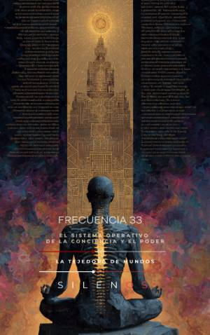

Illuminati
FRECUENCIA 33 : El Sistema Operativo de la Conciencia y el Poder
Sinopsis
¿Es el número 33 una simple cifra o la clave que articula las estructuras de poder y la conciencia humana? En esta obra, los autores exploran el "Número Maestro" no como un valor aritmético, sino como un código de identidad vibracional. Desde las 33 categorías de la divinidad védica hasta el Grado 33 del Rito Escocés, el libro desentraña cómo este patrón numérico ha servido de umbral entre lo humano y lo trascendente a lo largo de la historia. Lo que descubrirás en este libro: Raíces Simbólicas y Tradición: Un análisis profundo de la geometría sagrada, la filología del espíritu y la anatomía mística del cuerpo humano. Magisterio e Iniciación: La historia del Rito Escocés Antiguo y Aceptado, y el papel del Soberano Gran Inspector General como arquetipo de responsabilidad ética. El Sistema Operativo Global: Una visión crítica sobre la transición hacia una gobernanza digital, la transparencia algorítmica y los desafíos de la Inteligencia Artificial. Privacidad y Libertad: Un examen de las amenazas actuales, como las CBDC y el fin de la privacidad, frente a la necesidad de soberanía de datos y estándares abiertos. Acción Cívica: Un mapa práctico para traducir la alarma social en instituciones democráticas, protección social y una participación ciudadana informada. Frecuencia 33 es más que un tratado sobre esoterismo o tecnología; es un llamado a la coherencia y a la integridad en la era de la automatización. Un puente entre la mística antigua y la técnica moderna diseñado para quienes buscan comprender los hilos invisibles que mueven el mundo contemporáneo. Ideal para lectores interesados en historia de las sociedades secretas, filosofía política, ética tecnológica y desarrollo de la conciencia.